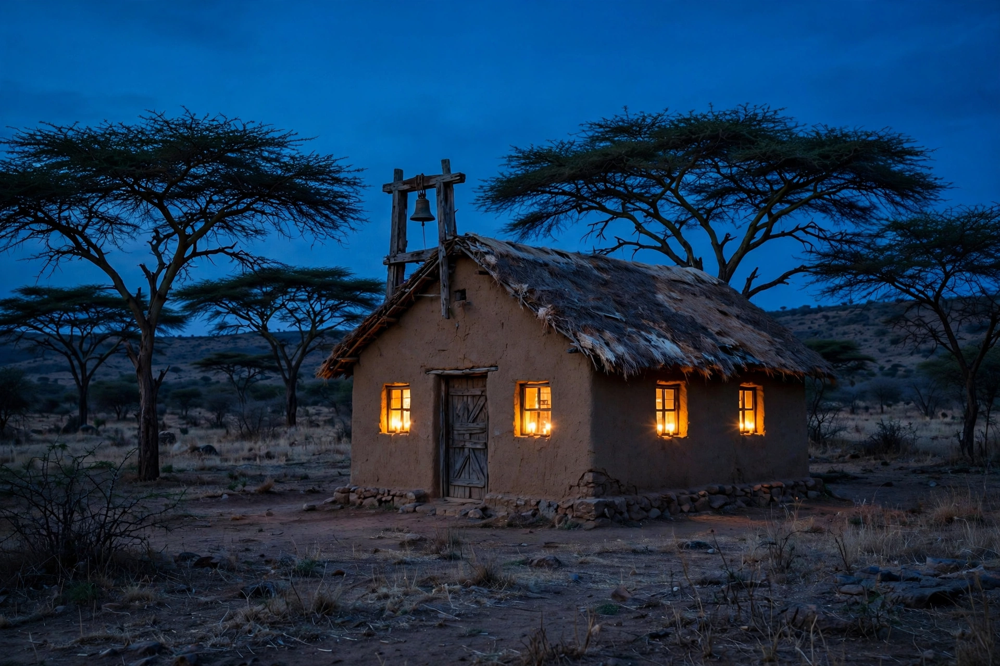

Persecuted ChurchIglesia perseguida
A Bloody Week for Nigerian Christians: 23 Killed in Four States, Nine Worshippers Still CaptiveSemana sangrienta para los cristianos de Nigeria: 23 muertos en cuatro estados y nueve fieles aún cautivos
In a single week in mid-November, armed attackers killed 23 Christians across four Nigerian states, murdered a pastor in Taraba, and abducted a family in Kaduna — while nine worshippers seized during a Sunday service remain in captivity.En una sola semana de mediados de noviembre, atacantes armados mataron a 23 cristianos en cuatro estados nigerianos, asesinaron a un pastor en Taraba y secuestraron a una familia en Kaduna, mientras nueve fieles capturados durante un culto dominical siguen en cautiverio.